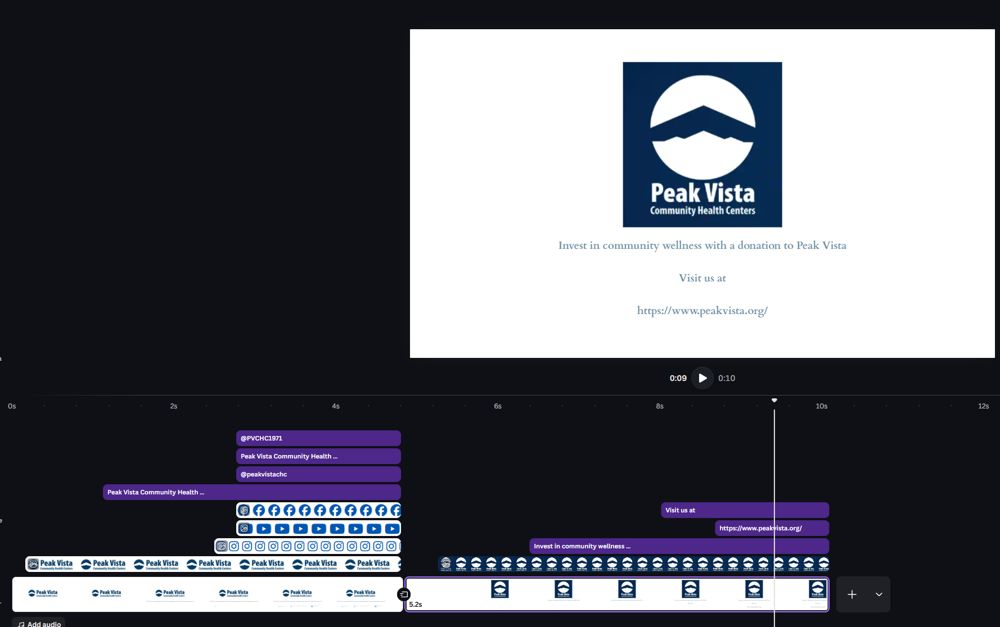
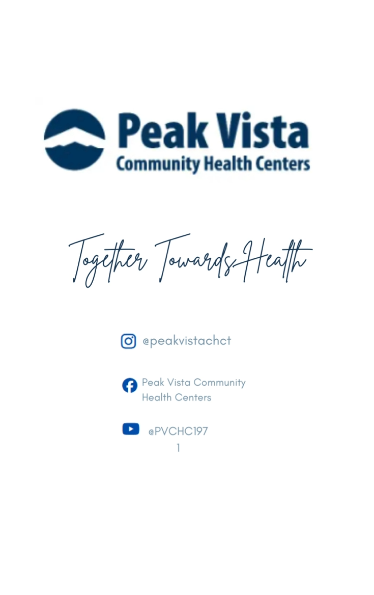
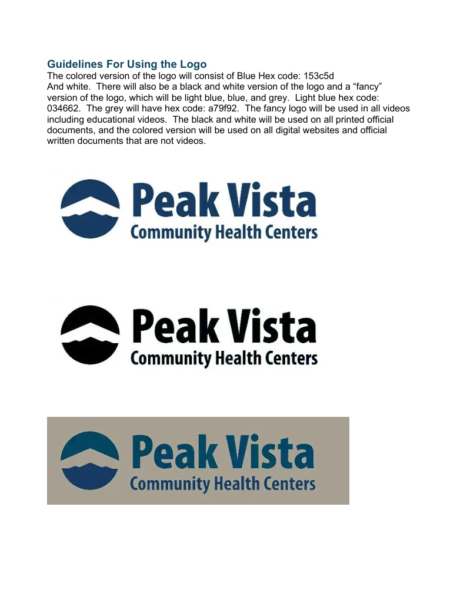
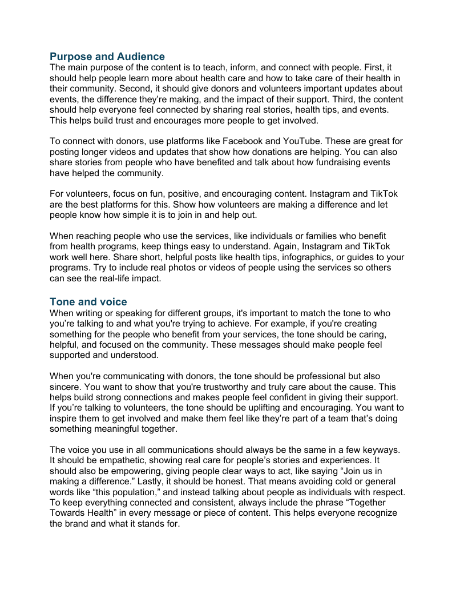
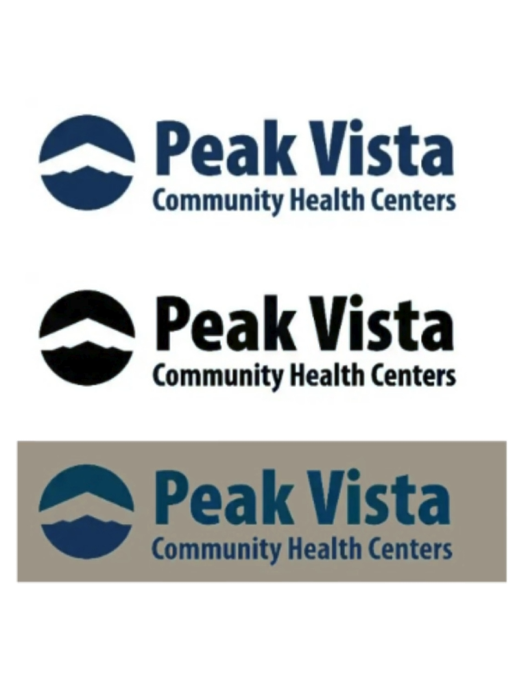

Content Strategy & Social Media Content Creation
Peak Vista Digital Style Video Templates
Created a comprehensive digital style video template to standardize web communications across a multi-location community health organization.
Responsibilities
Voice & Tone Analysis
Analyzed voice, tone, and style guidelines to create consistent patient-facing communications across digital channels.
Video Template Creation
Created reusable video templates that could support marketing, event promotion, and seasonal content updates.
Brand Component Support
Maintained brand logo components, typography, iconography, and visual standards across template materials.
Plain Language Review
Designed content guidance to help non-specialist contributors create clearer, more accessible communications.
Workflow Documentation
Documented contributor workflows from initial content planning through final publication and review.
Revision Support
Incorporated feedback through revision cycles to improve template clarity, usability, and practical application.

Overview
Creating consistent digital communication standards
Peak Vista Community Health Centers operates multiple locations serving underserved populations across southern Colorado. Their digital presence had grown without consistent standards, resulting in inconsistent voice, variable content quality, and patient-facing information that varied across location pages.
This project established a comprehensive digital style and content guide to unify communications and support clearer content creation.
Service Value
Helping contributors publish clearer, more consistent content
The value of the project comes from giving non-specialist content contributors a practical guide they can use without deep UX or content strategy knowledge. The template supports stronger brand consistency, clearer patient-facing information, and more confident publishing decisions.
Core guide sections: Voice & Tone, Writing Standards, Page Templates, Component Standards, and Governance.
Primary workflows supported: marketing video, event promotion, and seasonal content updates.
Revision cycles improved template clarity, examples, and contributor usability.

Problem & Goals
Standardizing content without making the process harder
The goal was to create a practical, usable video template that non-specialist content contributors could apply without deep UX knowledge.
The template also needed to support accessibility, plain language, brand consistency, and repeatable publishing workflows across a multi-location healthcare organization.
Brand Consistency
Contributors needed clearer standards for logos, typography, colors, iconography, and social media presentation.
Contributor Confidence
The guide needed to help staff make publishing decisions without requiring advanced design or content strategy expertise.
User Scenario
Start a Content Task
A contributor needs to create a marketing video, event promotion, or seasonal content update for a Peak Vista audience.
Check the Standards
The contributor reviews the relevant guide section for voice, tone, logo use, typography, and content formatting.
Apply the Template
The contributor uses the video template structure to create consistent, patient-facing digital content.
Review for Quality
The contributor checks accessibility, plain language, brand consistency, and approval requirements before publishing.
Publish With Confidence
The final content follows clear standards and supports a more unified digital presence across locations.

My Role
Designing a usable guide for real contributor workflows
The template can be used from initial audit through final publication and training. I collaborated with another technical communications and information design professional to ensure the guide addressed real workflows and integrated practical standards.
My work focused on making the guide clear, usable, and supportive for contributors who may not have formal content strategy or UX training.
Community Outreach Coordinator
Non-specialist content contributor
This contributor needs to create event or awareness content quickly while keeping the message accurate, consistent, and accessible.
Goals
- Use approved brand elements correctly
- Create clear patient-facing content
- Publish content with confidence
Communications Reviewer
Content quality and approval support
This reviewer needs a repeatable standard for checking voice, tone, accessibility, and approval requirements before content goes live.
Goals
- Reduce inconsistent messaging
- Support plain language standards
- Protect brand and clinical accuracy

Discovery & Constraints
Making standards simple enough for non-technical staff
Discovery included a content audit of web pages and analysis of related digital communications. A key constraint was that the guide needed to be maintained by non-technical staff.
This required clear governance processes, simple update procedures, and examples that showed contributors how to apply the standards in real content situations.
Maintainability
The guide needed to be easy to update as digital content, branding needs, and communication workflows changed.
Plain Language
Patient-facing information needed to be readable, approachable, and consistent across digital channels.
Governance
Clinical or legally sensitive content required clearer review and approval pathways before publication.
Key Features
Reusable Video Template Standards
The template gives contributors a repeatable structure for creating digital and social media videos while maintaining consistent branding, iconography, typography, and tone.
Voice, Tone, and Writing Guidance
The guide supports patient-facing communication through plain language standards, consistent tone, and clearer writing expectations for healthcare audiences.
Governance and Approval Workflows
Review and approval workflows were included for content types with clinical or legal implications, helping contributors understand when extra review is required.

Information Architecture, User Flows & Prototypes
Organizing the guide around contributor tasks
The guide was organized into five sections: Voice & Tone, Writing Standards, Page Templates, Component Standards, and Governance & Process. Each section was designed to work as a standalone reference with cross-links to related guidance.
The guide addressed three primary contributor workflows: creating a marketing video, creating event promotional content, and updating seasonal or time-sensitive content.
Training Support
Annotated mockups and template examples served as both specification documents and training materials, showing the reason behind each standard.
Requirements & Acceptance Criteria
Defining quality standards for video and digital content
The template included branding, tone, iconography, typography, and style consistency checks. Review and approval workflows were specified for content types with clinical or legal implications.
Project Links
Style guide and video demonstrations
The style guide and video examples demonstrate the application of brand standards, template structure, social media presentation, and contributor-facing guidance.
Analytics, Iteration, Outcomes & Next Steps
Improving clarity through pilot testing and revisions
A pilot test involved creating new content using only the template as a reference. Feedback was incorporated in two revision cycles, primarily improving the clarity of the page template section and adding more before-and-after writing examples.
The final video template was developed with logos, social media handles, and iconography so content contributors could make more confident publishing decisions.
Expand before-and-after examples for common healthcare communication tasks.
Create additional quick-reference cards for social media, event content, and seasonal updates.
Continue refining governance workflows for clinical, legal, and patient-facing communications.
Next Steps
Next steps include expanding quick-reference examples, strengthening contributor training materials, and refining approval workflows for content with clinical or legal implications.
Future iterations would include more social media templates, additional accessibility examples, and a more detailed content governance process for staff updates.
Learnings
This project strengthened my ability to translate brand, content, and accessibility standards into practical templates that non-specialist contributors can use.
I also learned how important governance, plain language, and clear examples are when creating reusable communication standards for healthcare organizations.